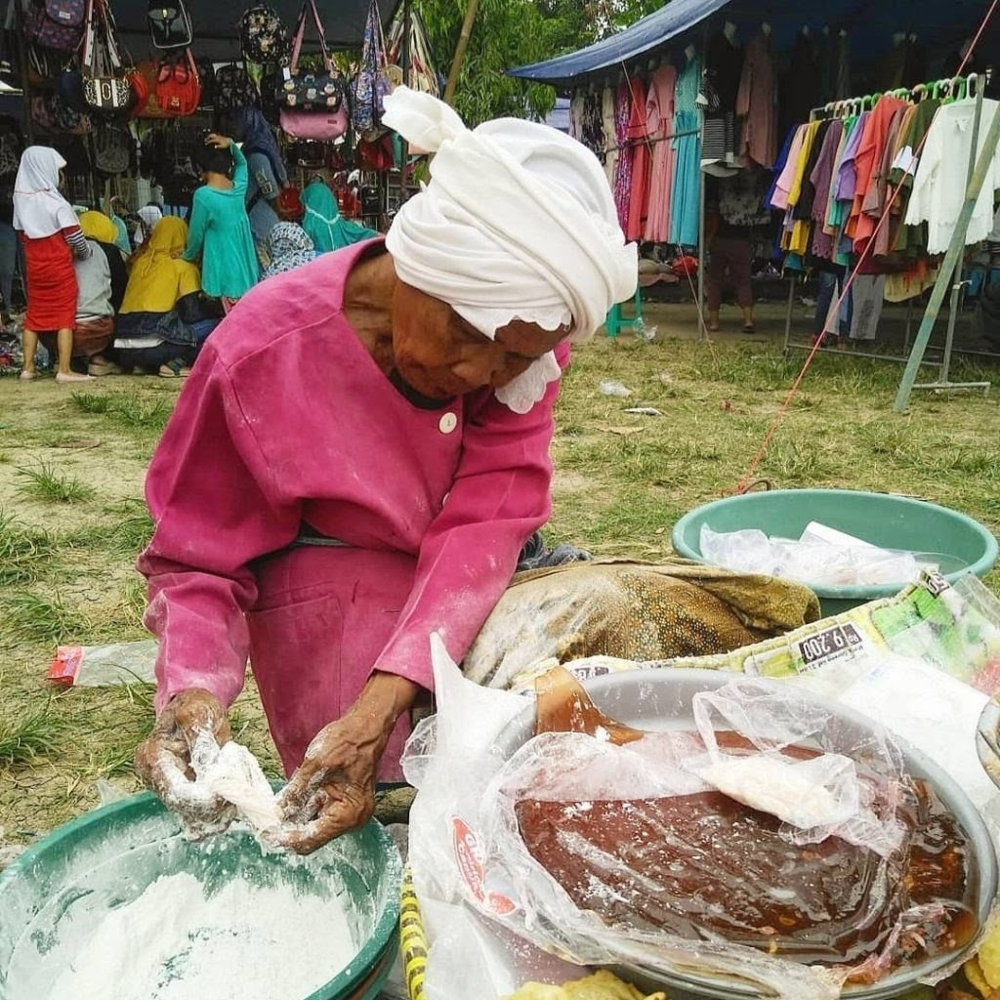
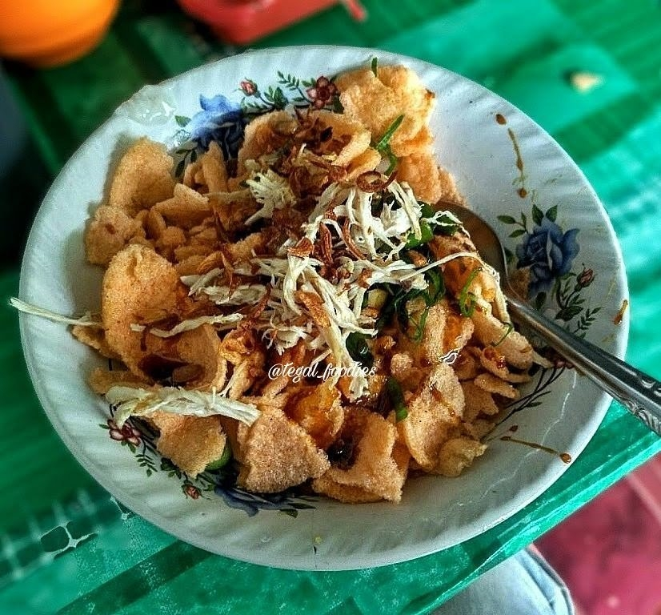
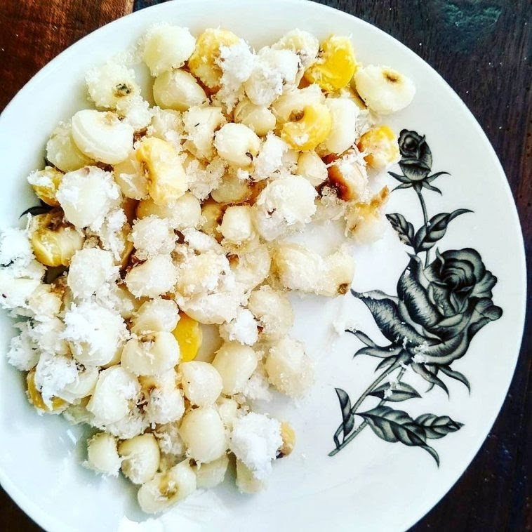
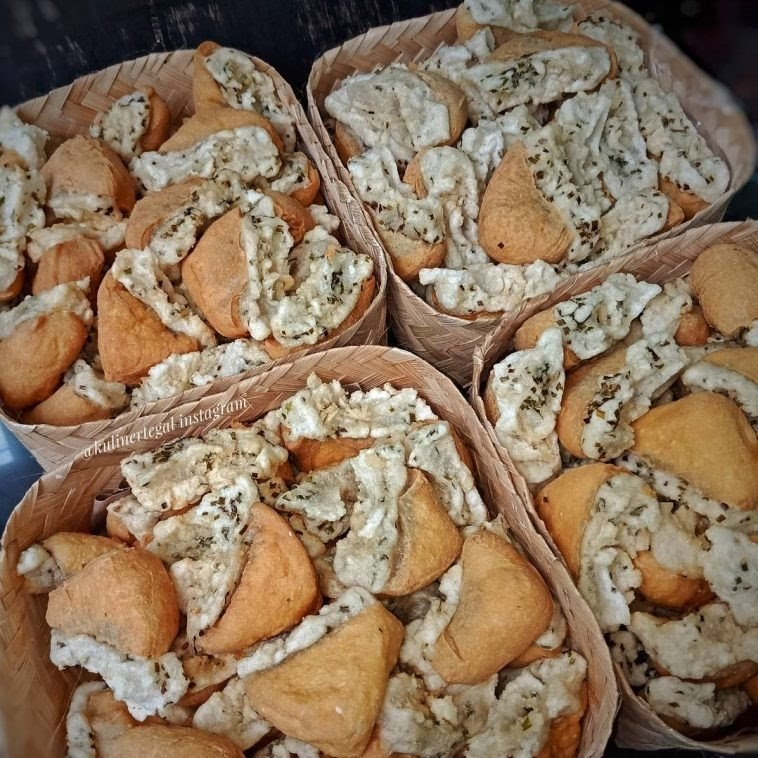
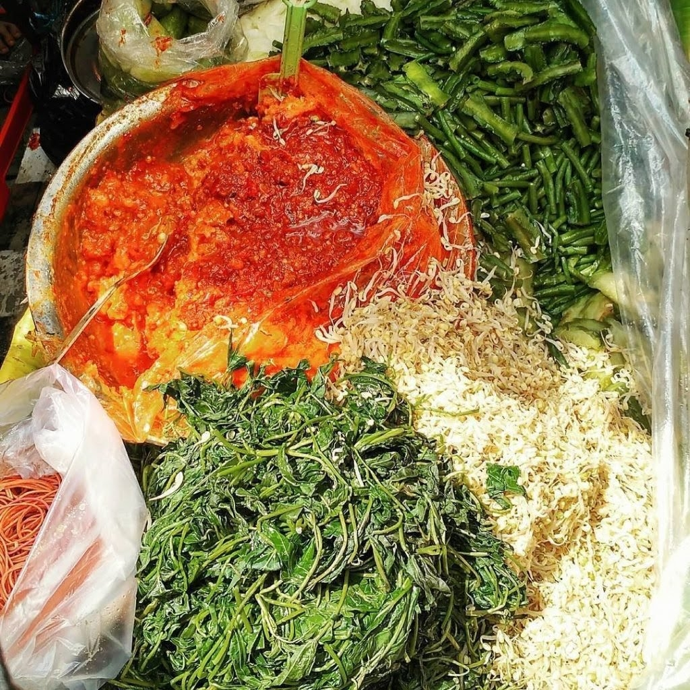
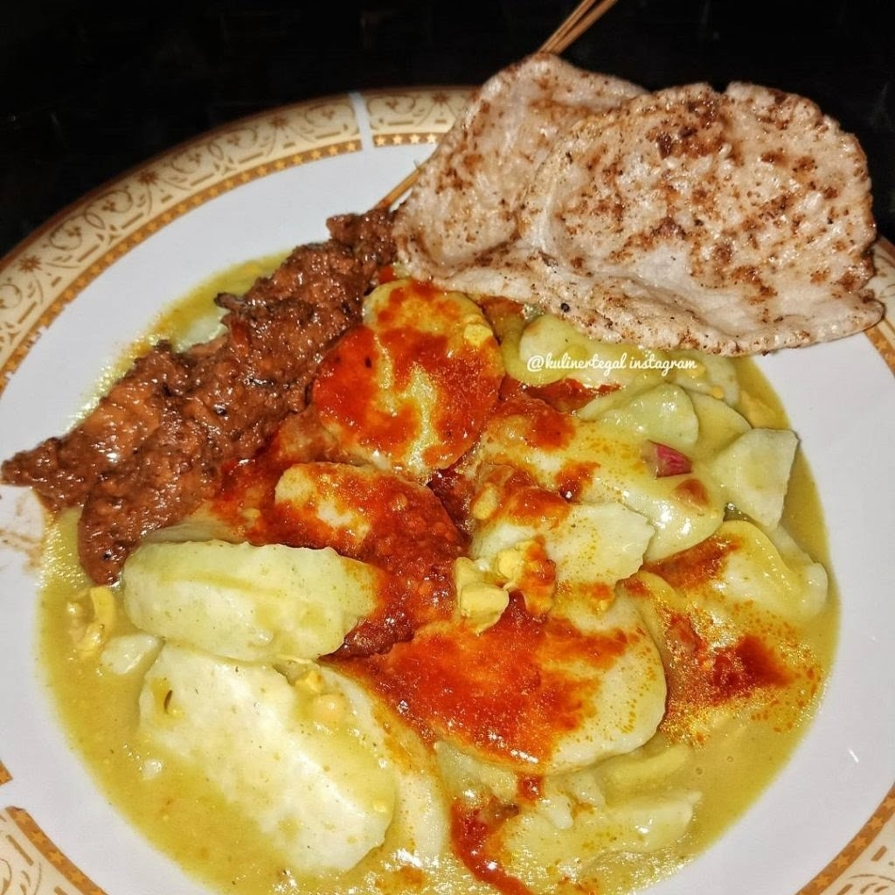
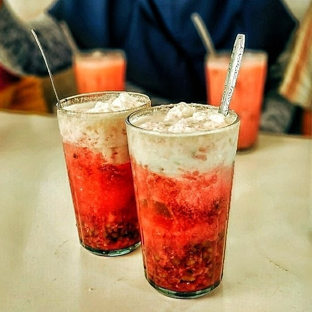
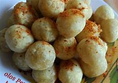
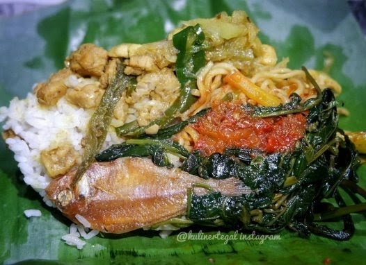
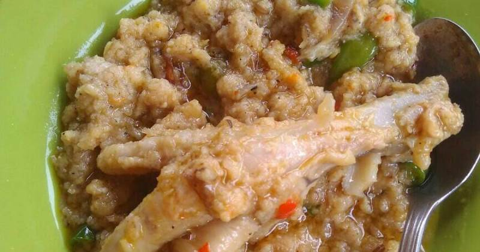

- Gulali

Jika beruntung, kamu bisa menemukan salah satu penjual jajanan jadul yaitu gulali di Tegal. Tepatnya di lapangan kota ada seorang wanita yang sudah berumur. Nenek tersebut menawarkan gulali yang dibalut dengan tepung. Menikmati kuliner seperti ini mungkin akan mengingatkanmu pada kenangan masa kecil.",
- Bubur Ayam Mang Hardi

Bubur Ayam ini bisa jadi pilihan untuk sarapan atau makan siang di Tegal. Harganya murah meriah dengan porsi melimpah. Yang menggiurkan selain ayamnya adalah tambahan kerupuk gurih. Untuk menikmatinya, datang ke lokasi Bubur Mang Hardi di Jalan Merpati No. 70.
- Blendung

Kuliner Tegal yang pertama adalah Blendung. Makanan ini terbuat dari jagung yang direbus sampai lembut. Setelah matang, baru jagung dihidangkan dengan taburan parutan kelapa di atasnya.
Untuk melahirkan rasa yang lebih nikmat, biasanya makanan ini diberi bumbu-bumbu khusus. Sehingga cita rasa yang muncul lebih segar dan renyah.
- Tahu Hasan

Tahu bisa dibilang penganan khas hampir di seluruh Indonesia. Apalagi bahan makanan dari ekstrak kedelai ini bisa diolah menjadi berbagai jenis makanan ringan, seperti Tahu Hasan di Tegal.
Tahu Hasan adalah penganan dari tahu yang di dalamnya dipenuhi dengan bumbu. Untuk menarik minat dan selera, bahan-bahan perasa tersebut diisi hingga ke permukaan luar. Sungguh tak terbayangkan bagaimana rasanya memakan tahu ini. Pasti nikmat karena bumbunya berlimpah.
- Rujak Teplak

Rujak Teplak adalah makanan tradisional di Tegal yang mulai punah. Karena sudah tidak banyak masyarakat yang menjualnya. Maka dari itu, untuk bisa menikmatinya, silakan cari dulu, biasanya di Pasar Banjaran masih ada orang yang menjual.
Isi rujak hampir sama dengan rujak biasa. Yang berbeda hanya sambalnya saja. Untuk rujak Teplak sambalnya terbuat dari sayuran yang disirami kuah cabai dan kacang.
- Kupat Gladed

Kupat Glabed adalah makanan khas Tegal yang nikmat dan mengenyangkan. Penganan ini berisi ketupat yang diiris agak tipis lalu disiramkan kuah Glabed kental di atasnya. Sate ayam dan taburan kerang akan membuat makanan ini lebih menggoda.
Yang unik dari makanan Kupat Glabed adalah adanya tempa yang disajikan hangat. Sehingga, rasa nikmatnya lebih terasa dan tentunya sangat mengenyangkan.
- Es Lontrong

Kuliner Khas Tegal selanjutnya adalah Es Lontrong. Semacam es campur biasa tetapi topping di dalamnya lebih sedikit. Hanya diisi cincau dan kacang hijau saja.
Walaupun begitu, rasa manisnya sangat nikmat. Karena pemanis yang digunakan berasal dari gula merah yang ditambahkan sedikit santan. Makanya es Lontrong tidak hanya nikmat tetapi juga legit dan agak ketal.
- Olos

Olos bukan hanya makanan yang disukai oleh anak-anak, orang dewasa pun menyukainya. Penganan ini dibuat dari adonan tepung yang dibentuk bulat seperti bola-bola kecil. Sedangkan di bagian dalamnya diisi sayuran matang.
Saat ini, kue Olos sudah banyak yang dimodifikasi. Terutama isinya yang beragam dan berwarna. Bahkan Olos modern isiannya dari sosis dan irisan daging ayam. Sedangkan untuk penyuka manis, bisa membeli Olos yang berisi keju dan kacang hijau.
- Nasi Ponggol

Kuliner khas Tegal selanjutnya adalah Nasi Ponggol. Penganan yang sangat unik karena dibungkus daun pisang. Di dalamnya sudah diisi lauk dengan jumlah yang tidak terlalu banyak.
Makanan ini cocok untuk sarapan pagi. Selain porsinya pas, perpaduan rasa legit nasi dengan bumbu lauknya membuat semangat kerja akan meningkat. Apalagi makanan ini cukup mengenyangkan.
- Glotak

Glotak adalah makanan di Tegal yang juga mulai hilang. Karena tidak banyak orang yang tahu cara membuatnya. Makanan ini dibuat dari gembus oncom yang disiram air kaldu dari rebusan tulang sapi.
Lauknya sendiri menggunakan sate ayam atau potongan iga sapi yang sudah dilembutkan. Rasanya tentu luar biasa, lighting-nya pun dijamin meningkatkan selera.